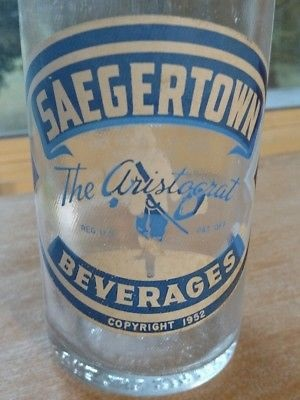
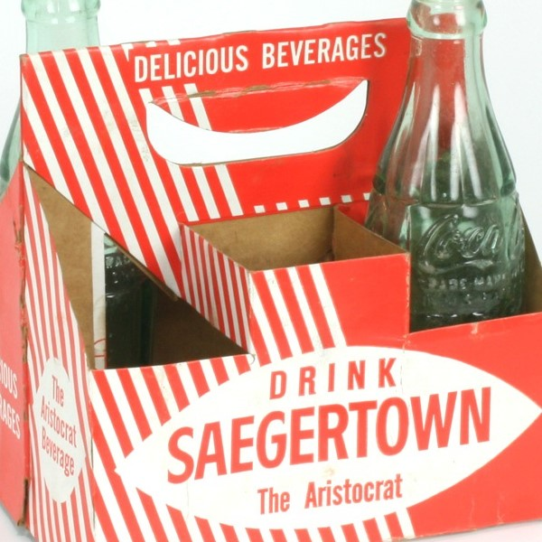

The History and Growth of Saegertown Beverages
The Start
Fame is often due to an accident or some unforeseen circumstance and that is how the building of an ice house led to the development of the world famous "Saegertown Inn" and "Saegertown Ginger Ale".
In 1882, Charles Benner and his two sons built a large ice house on the east bank of French Creek, just north of the mill race. In connection with this enterprise, they drilled a well in January 1883. The water which sprang from this well had a peculiar taste and an effervescent appearance. Suspecting this water had unusual properties, they had it analyzed at Allegheny College in 1884 and found that it was high in mineral content of various kinds, many of which were the accepted medicinal ingredients of that day.
This spring soon became widely known and people came in great numbers from the surrounding vicinity to take advantage of its beneficial qualities.
Realizing the commercial value of the spring, the Benners built a bath, spring house and started bottling and carbonizing the water to make it more palatable and sanitary. This necessitated the erection of a bottling plant known as Eureka Springs, which was the beginning of the Saegertown Ginger Ale Company.
In 1892, the Moses Brothers of Cleveland, Ohio, acquired ownership and built the first actual soft drink factory on the shores of French Creek. The brother used the water of the De Profundis Spring, which was the deepest of the Eureka Springs. Ownership passed through many hands. A corporation named Saegertown Ginger Ale Company engaged in the manufacture of Saegertown Ginger Ale as well as all other types of soft drinks. In a bottling plant on Grant Street in Saegertown was constructed in 1920 on the site of the new De Profundis spring which was drilled in 1919.
In 1905, at the World's Fair in Paris, France, the "Grand Prix" was awarded to the Saegertown Mineral Springs Company for the manufacturing the best soft drink of that day. By the mid-1920's the name, Saegertown Ginger Ale was known not only from coast to coast but all over the world. The public knew that each beverage bottle bearing the emblem of the cavalier, and the registered the trademark "The Aristocrat", was worthy of the title, SAEGERTOWN THE ARISTOCRAT OF GINGER ALES.,
It was always felt that, along with the delicious recipes for the various soft drink flavors, the other key ingredient was the natural spring water that flowed beneath the plant and was used to make all the beverages.
In time, all good things must end, as was true concerning the small town soft drink bottler. Even with all of their success demise came with the rise of certain national brand name companies. However, unlike many other soft drink plants, Saegertown Beverages had a great spring source. In the 1970's, ownership had the foresight to see a future in bottled water and made the decision to start bottling the famous water in a 5-gallon returnable bottle and the 1-gallon jug for store demand. In the early 1990's our distilled water was introduced. During this time period, the demand of the consumers was for a single serve product. This new segment helped skyrocket bottled water sales into one of the three tops beverages sold in North America. Today we bottle our spring water and distilled water in many different sizes including 5-gallon returnable, 4 gallons, 2.5 gallons, 1 gallon, 1.5 liters, 1 liter, 24 ounces, 20 ounces, 16.9 ounces, 12 ounces, and 8-ounce bottles.
The evolution continues and in the past decade, the demand for the private label has blasted into this business. Most, if not all, wholesale chains want their own label put on the bottled water products dominating their shelf space. Saegertown Beverages has done well in this area by putting our water into various sized bottles under different company labels. We are bottling our great tasting water under many different names from national to regional companies. This currently allows the Eureka Springs "taste" to be found in over twenty-four states under our customers' private labels and our own Eureka Springs label.
It has been a long history for Saegertown Beverages and Eureka Springs water, but as we continue to evolve, so does our history.